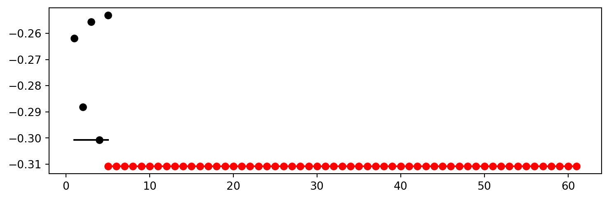
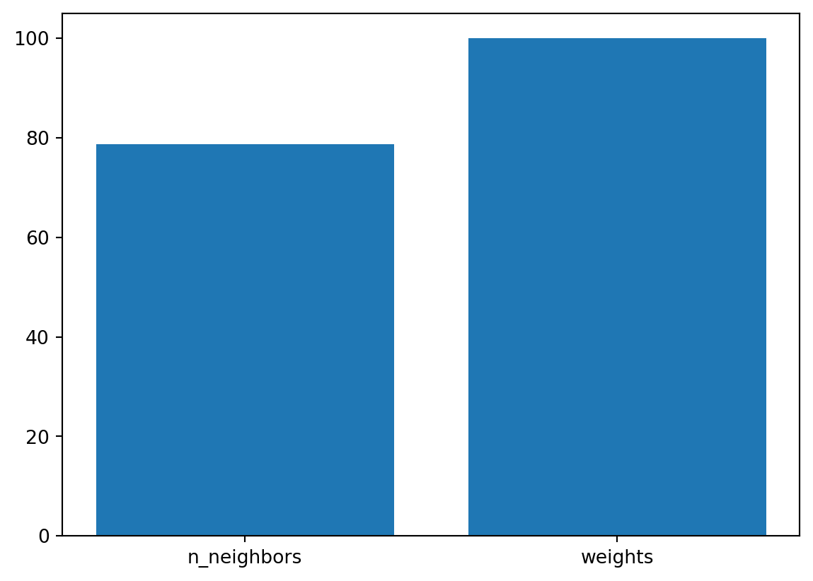
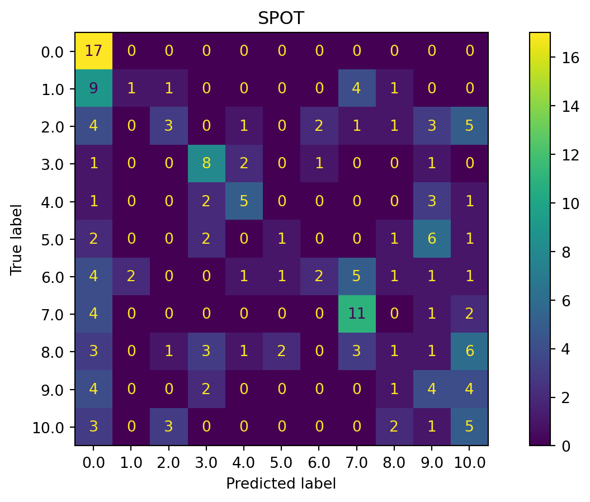
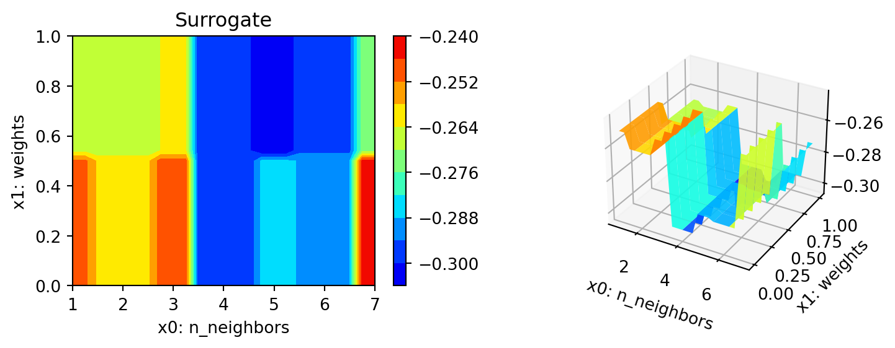
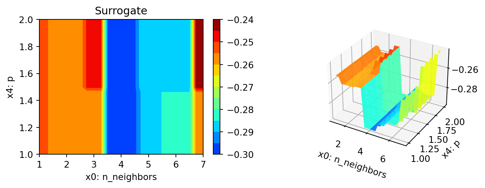
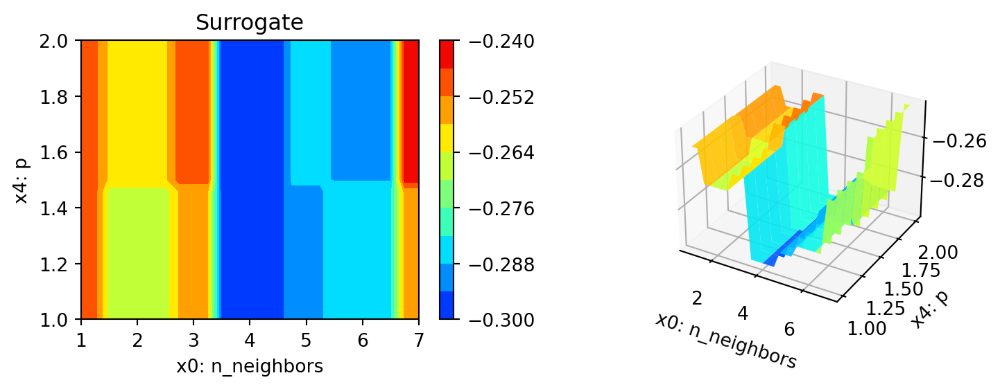
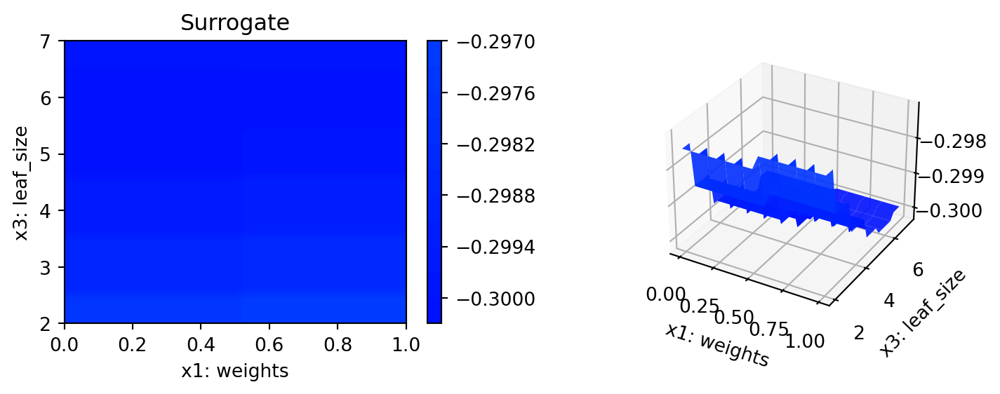
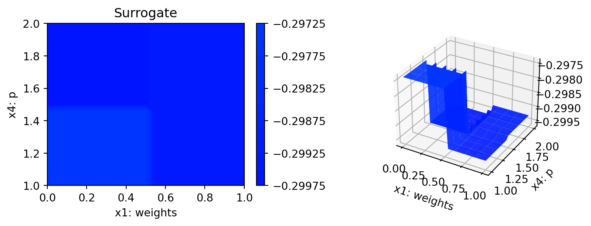
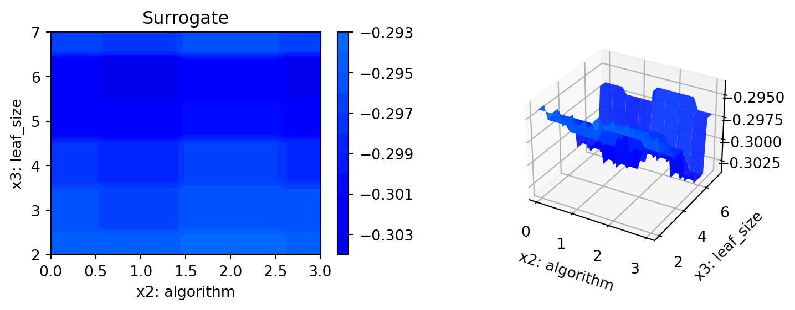

pip list | grep "spot[RiverPython]"spotPython 0.2.50
spotRiver 0.0.94Note: you may need to restart the kernel to use updated packages.This document refers to the following software versions:
python: 3.10.10pip list | grep "spot[RiverPython]"spotPython 0.2.50
spotRiver 0.0.94Note: you may need to restart the kernel to use updated packages.spotPython can be installed via pip. Alternatively, the source code can be downloaded from gitHub: https://github.com/sequential-parameter-optimization/spotPython.
!pip install spotPythonspotPython from gitHub.# import sys
# !{sys.executable} -m pip install --upgrade build
# !{sys.executable} -m pip install --upgrade --force-reinstall spotPythonBefore we consider the detailed experimental setup, we select the parameters that affect run time and the initial design size.
MAX_TIME = 1
INIT_SIZE = 5
ORIGINAL = Falseimport os
import copy
import socket
from datetime import datetime
from dateutil.tz import tzlocal
start_time = datetime.now(tzlocal())
HOSTNAME = socket.gethostname().split(".")[0]
experiment_name = '19-knn-sklearn' + "_" + HOSTNAME + "_" + str(MAX_TIME) + "min_" + str(INIT_SIZE) + "init_" + str(start_time).split(".", 1)[0].replace(' ', '_')
experiment_name = experiment_name.replace(':', '-')
print(experiment_name)
if not os.path.exists('./figures'):
os.makedirs('./figures')19-knn-sklearn_maans03_1min_5init_2023-06-28_04-19-19import warnings
warnings.filterwarnings("ignore")fun_control Dictionarytensorboard_path to None if you are working under Windows.from spotPython.utils.init import fun_control_init
fun_control = fun_control_init(task="classification",
tensorboard_path="runs/16_spot_hpt_sklearn_classification")import pandas as pd
if ORIGINAL == True:
train_df = pd.read_csv('./data/VBDP/trainn.csv')
test_df = pd.read_csv('./data/VBDP/testt.csv')
else:
train_df = pd.read_csv('./data/VBDP/train.csv')
# remove the id column
train_df = train_df.drop(columns=['id'])from sklearn.preprocessing import OrdinalEncoder
n_samples = train_df.shape[0]
n_features = train_df.shape[1] - 1
target_column = "prognosis"
# Encoder our prognosis labels as integers for easier decoding later
enc = OrdinalEncoder()
train_df[target_column] = enc.fit_transform(train_df[[target_column]])
train_df.columns = [f"x{i}" for i in range(1, n_features+1)] + [target_column]
print(train_df.shape)
train_df.head()(707, 65)| x1 | x2 | x3 | x4 | x5 | x6 | x7 | x8 | x9 | x10 | ... | x56 | x57 | x58 | x59 | x60 | x61 | x62 | x63 | x64 | prognosis | |
|---|---|---|---|---|---|---|---|---|---|---|---|---|---|---|---|---|---|---|---|---|---|
| 0 | 1.0 | 1.0 | 0.0 | 1.0 | 1.0 | 1.0 | 1.0 | 0.0 | 1.0 | 1.0 | ... | 0.0 | 0.0 | 0.0 | 0.0 | 0.0 | 0.0 | 0.0 | 0.0 | 0.0 | 3.0 |
| 1 | 0.0 | 0.0 | 0.0 | 0.0 | 0.0 | 0.0 | 1.0 | 0.0 | 1.0 | 0.0 | ... | 0.0 | 0.0 | 0.0 | 0.0 | 0.0 | 0.0 | 0.0 | 0.0 | 0.0 | 7.0 |
| 2 | 0.0 | 1.0 | 1.0 | 1.0 | 0.0 | 1.0 | 1.0 | 1.0 | 1.0 | 1.0 | ... | 1.0 | 1.0 | 1.0 | 1.0 | 1.0 | 0.0 | 1.0 | 1.0 | 1.0 | 3.0 |
| 3 | 0.0 | 0.0 | 1.0 | 1.0 | 1.0 | 1.0 | 0.0 | 1.0 | 0.0 | 1.0 | ... | 0.0 | 0.0 | 0.0 | 0.0 | 0.0 | 0.0 | 0.0 | 0.0 | 0.0 | 10.0 |
| 4 | 0.0 | 0.0 | 0.0 | 0.0 | 0.0 | 0.0 | 0.0 | 0.0 | 1.0 | 0.0 | ... | 0.0 | 1.0 | 0.0 | 0.0 | 1.0 | 1.0 | 1.0 | 0.0 | 0.0 | 6.0 |
5 rows × 65 columns
The full data set train_df 64 features. The target column is labeled as prognosis.
We split out a hold-out test set (25% of the data) so we can calculate an example MAP@K
import numpy as np
from sklearn.model_selection import train_test_split
X_train, X_test, y_train, y_test = train_test_split(train_df.drop(target_column, axis=1), train_df[target_column],
random_state=42,
test_size=0.25,
stratify=train_df[target_column])
train = pd.DataFrame(np.hstack((X_train, np.array(y_train).reshape(-1, 1))))
test = pd.DataFrame(np.hstack((X_test, np.array(y_test).reshape(-1, 1))))
train.columns = [f"x{i}" for i in range(1, n_features+1)] + [target_column]
test.columns = [f"x{i}" for i in range(1, n_features+1)] + [target_column]
print(train.shape)
print(test.shape)
train.head()(530, 65)
(177, 65)| x1 | x2 | x3 | x4 | x5 | x6 | x7 | x8 | x9 | x10 | ... | x56 | x57 | x58 | x59 | x60 | x61 | x62 | x63 | x64 | prognosis | |
|---|---|---|---|---|---|---|---|---|---|---|---|---|---|---|---|---|---|---|---|---|---|
| 0 | 1.0 | 0.0 | 0.0 | 0.0 | 0.0 | 0.0 | 0.0 | 0.0 | 0.0 | 0.0 | ... | 0.0 | 0.0 | 0.0 | 0.0 | 0.0 | 0.0 | 0.0 | 0.0 | 0.0 | 2.0 |
| 1 | 0.0 | 1.0 | 1.0 | 1.0 | 1.0 | 1.0 | 1.0 | 1.0 | 1.0 | 0.0 | ... | 0.0 | 0.0 | 0.0 | 0.0 | 0.0 | 0.0 | 0.0 | 0.0 | 0.0 | 4.0 |
| 2 | 0.0 | 0.0 | 0.0 | 1.0 | 1.0 | 1.0 | 0.0 | 0.0 | 0.0 | 0.0 | ... | 0.0 | 0.0 | 0.0 | 0.0 | 1.0 | 1.0 | 1.0 | 0.0 | 1.0 | 1.0 |
| 3 | 1.0 | 1.0 | 0.0 | 1.0 | 1.0 | 1.0 | 0.0 | 0.0 | 0.0 | 0.0 | ... | 0.0 | 0.0 | 0.0 | 0.0 | 0.0 | 0.0 | 0.0 | 0.0 | 0.0 | 6.0 |
| 4 | 0.0 | 0.0 | 0.0 | 1.0 | 0.0 | 0.0 | 1.0 | 1.0 | 0.0 | 0.0 | ... | 0.0 | 0.0 | 0.0 | 0.0 | 0.0 | 0.0 | 0.0 | 0.0 | 0.0 | 5.0 |
5 rows × 65 columns
# add the dataset to the fun_control
fun_control.update({"data": train_df, # full dataset,
"train": train,
"test": test,
"n_samples": n_samples,
"target_column": target_column})Data preprocesssing can be very simple, e.g., you can ignore it. Then you would choose the prep_model “None”:
prep_model = None
fun_control.update({"prep_model": prep_model})A default approach for numerical data is the StandardScaler (mean 0, variance 1). This can be selected as follows:
# prep_model = StandardScaler()
# fun_control.update({"prep_model": prep_model})Even more complicated pre-processing steps are possible, e.g., the follwing pipeline:
# categorical_columns = []
# one_hot_encoder = OneHotEncoder(handle_unknown="ignore", sparse_output=False)
# prep_model = ColumnTransformer(
# transformers=[
# ("categorical", one_hot_encoder, categorical_columns),
# ],
# remainder=StandardScaler(),
# )algorithm) and core_model_hyper_dictThe selection of the algorithm (ML model) that should be tuned is done by specifying the its name from the sklearn implementation. For example, the SVC support vector machine classifier is selected as follows:
fun_control = add_core_model_to_fun_control(SVC, fun_control, SklearnHyperDict)
Other core_models are, e.g.,:
We will use the RandomForestClassifier classifier in this example.
from sklearn.linear_model import RidgeCV
from sklearn.ensemble import RandomForestClassifier
from sklearn.svm import SVC
from sklearn.linear_model import LogisticRegression
from sklearn.neighbors import KNeighborsClassifier
from sklearn.ensemble import GradientBoostingClassifier
from sklearn.ensemble import GradientBoostingRegressor
from sklearn.ensemble import HistGradientBoostingClassifier
from sklearn.linear_model import ElasticNet
from spotPython.hyperparameters.values import add_core_model_to_fun_control
from spotPython.data.sklearn_hyper_dict import SklearnHyperDict
from spotPython.fun.hypersklearn import HyperSklearn# core_model = RidgeCV
# core_model = GradientBoostingRegressor
# core_model = ElasticNet
# core_model = RandomForestClassifier
core_model = KNeighborsClassifier
# core_model = LogisticRegression
# core_model = KNeighborsClassifier
# core_model = GradientBoostingClassifier
# core_model = HistGradientBoostingClassifier
fun_control = add_core_model_to_fun_control(core_model=core_model,
fun_control=fun_control,
hyper_dict=SklearnHyperDict,
filename=None)Now fun_control has the information from the JSON file. The available hyperparameters are:
print(*fun_control["core_model_hyper_dict"].keys(), sep="\n")n_neighbors
weights
algorithm
leaf_size
phyper_dict Hyperparameters for the Selected Algorithm aka core_modelNumeric and boolean values can be modified using the modify_hyper_parameter_bounds method. For example, to change the tol hyperparameter of the SVC model to the interval [1e-3, 1e-2], the following code can be used:
fun_control = modify_hyper_parameter_bounds(fun_control, "tol", bounds=[1e-3, 1e-2])
# from spotPython.hyperparameters.values import modify_hyper_parameter_bounds
# fun_control = modify_hyper_parameter_bounds(fun_control, "probability", bounds=[1, 1])spotPython provides functions for modifying the hyperparameters, their bounds and factors as well as for activating and de-activating hyperparameters without re-compilation of the Python source code. These functions were described in Section 14.6.
Factors can be modified with the modify_hyper_parameter_levels function. For example, to exclude the sigmoid kernel from the tuning, the kernel hyperparameter of the SVC model can be modified as follows:
fun_control = modify_hyper_parameter_levels(fun_control, "kernel", ["linear", "rbf"])
The new setting can be controlled via:
fun_control["core_model_hyper_dict"]["kernel"]
# from spotPython.hyperparameters.values import modify_hyper_parameter_levels
# fun_control = modify_hyper_parameter_levels(fun_control, "kernel", ["rbf"])Optimizers are described in Section 14.6.1.
accuracy function.cross_entropy function and evaluated with respect to a metric, for example, the accuracy function.The loss function, that is usually used in deep learning for optimizing the weights of the net, is stored in the fun_control dictionary as "loss_function".
There are two different types of metrics in spotPython:
"metric_river" is used for the river based evaluation via eval_oml_iter_progressive."metric_sklearn" is used for the sklearn based evaluation.We will consider multi-class classification metrics, e.g., mapk_score and top_k_accuracy_score.
In this multi-class classification example the machine learning algorithm should return the probabilities of the specific classes ("predict_proba") instead of the predicted values.
We set "predict_proba" to True in the fun_control dictionary.
To select the MAPK metric, the following two entries can be added to the fun_control dictionary:
"metric_sklearn": mapk_score"
"metric_params": {"k": 3}.
Alternatively, other metrics for multi-class classification can be used, e.g.,: * top_k_accuracy_score or * roc_auc_score
The metric roc_auc_score requires the parameter "multi_class", e.g.,
"multi_class": "ovr".
This is set in the fun_control dictionary.
spotPython performs a minimization, therefore, metrics that should be maximized have to be multiplied by -1. This is done by setting "weights" to -1.
from spotPython.utils.metrics import mapk_score
fun_control.update({
"weights": -1,
"metric_sklearn": mapk_score,
"predict_proba": True,
"metric_params": {"k": 3},
})"eval_holdout".fun_control.update({
"eval": "train_hold_out",
})Instead of using the OOB-score, the classical cross validation can be used. The number of folds is set by the key "k_folds". For example, to use 5-fold cross validation, the key "k_folds" is set to 5. Uncomment the following line to use cross validation:
# fun_control.update({
# "eval": "train_cv",
# "k_folds": 10,
# })# extract the variable types, names, and bounds
from spotPython.hyperparameters.values import (get_bound_values,
get_var_name,
get_var_type,)
var_type = get_var_type(fun_control)
var_name = get_var_name(fun_control)
fun_control.update({"var_type": var_type,
"var_name": var_name})
lower = get_bound_values(fun_control, "lower")
upper = get_bound_values(fun_control, "upper")from spotPython.utils.eda import gen_design_table
print(gen_design_table(fun_control))| name | type | default | lower | upper | transform |
|-------------|--------|-----------|---------|---------|-----------------------|
| n_neighbors | int | 2 | 1 | 7 | transform_power_2_int |
| weights | factor | uniform | 0 | 1 | None |
| algorithm | factor | auto | 0 | 3 | None |
| leaf_size | int | 5 | 2 | 7 | transform_power_2_int |
| p | int | 2 | 1 | 2 | None |The objective function is selected next. It implements an interface from sklearn’s training, validation, and testing methods to spotPython.
from spotPython.fun.hypersklearn import HyperSklearn
fun = HyperSklearn().fun_sklearnSpot Optimizermax_time).initi_size, 20 points) is not considered.from spotPython.hyperparameters.values import get_default_hyperparameters_as_array
hyper_dict=SklearnHyperDict().load()
X_start = get_default_hyperparameters_as_array(fun_control, hyper_dict)
X_startarray([[2, 0, 0, 5, 2]])import numpy as np
from spotPython.spot import spot
from math import inf
spot_tuner = spot.Spot(fun=fun,
lower = lower,
upper = upper,
fun_evals = inf,
fun_repeats = 1,
max_time = MAX_TIME,
noise = False,
tolerance_x = np.sqrt(np.spacing(1)),
var_type = var_type,
var_name = var_name,
infill_criterion = "y",
n_points = 1,
seed=123,
log_level = 50,
show_models= False,
show_progress= True,
fun_control = fun_control,
design_control={"init_size": INIT_SIZE,
"repeats": 1},
surrogate_control={"noise": True,
"cod_type": "norm",
"min_theta": -4,
"max_theta": 3,
"n_theta": len(var_name),
"model_fun_evals": 10_000,
"log_level": 50
})
spot_tuner.run(X_start=X_start)spotPython tuning: -0.3107769423558897 [----------] 0.72% spotPython tuning: -0.3107769423558897 [----------] 1.50% spotPython tuning: -0.3107769423558897 [----------] 2.28% spotPython tuning: -0.3107769423558897 [----------] 3.01% spotPython tuning: -0.3107769423558897 [----------] 3.77% spotPython tuning: -0.3107769423558897 [----------] 4.61% spotPython tuning: -0.3107769423558897 [#---------] 5.81% spotPython tuning: -0.3107769423558897 [#---------] 6.77% spotPython tuning: -0.3107769423558897 [#---------] 7.70% spotPython tuning: -0.3107769423558897 [#---------] 8.57% spotPython tuning: -0.3107769423558897 [#---------] 9.52% spotPython tuning: -0.3107769423558897 [#---------] 10.84% spotPython tuning: -0.3107769423558897 [#---------] 12.20% spotPython tuning: -0.3107769423558897 [#---------] 13.66% spotPython tuning: -0.3107769423558897 [##--------] 15.14% spotPython tuning: -0.3107769423558897 [##--------] 16.68% spotPython tuning: -0.3107769423558897 [##--------] 18.63% spotPython tuning: -0.3107769423558897 [##--------] 20.06% spotPython tuning: -0.3107769423558897 [##--------] 21.73% spotPython tuning: -0.3107769423558897 [##--------] 23.17% spotPython tuning: -0.3107769423558897 [##--------] 24.52% spotPython tuning: -0.3107769423558897 [###-------] 25.73% spotPython tuning: -0.3107769423558897 [###-------] 27.24% spotPython tuning: -0.3107769423558897 [###-------] 29.01% spotPython tuning: -0.3107769423558897 [###-------] 30.44% spotPython tuning: -0.3107769423558897 [###-------] 32.30% spotPython tuning: -0.3107769423558897 [###-------] 33.71% spotPython tuning: -0.3107769423558897 [####------] 35.30% spotPython tuning: -0.3107769423558897 [####------] 37.07% spotPython tuning: -0.3107769423558897 [####------] 38.75% spotPython tuning: -0.3107769423558897 [####------] 40.34% spotPython tuning: -0.3107769423558897 [####------] 42.17% spotPython tuning: -0.3107769423558897 [####------] 43.69% spotPython tuning: -0.3107769423558897 [#####-----] 45.57% spotPython tuning: -0.3107769423558897 [#####-----] 47.94% spotPython tuning: -0.3107769423558897 [#####-----] 50.22% spotPython tuning: -0.3107769423558897 [#####-----] 52.31% spotPython tuning: -0.3107769423558897 [#####-----] 54.83% spotPython tuning: -0.3107769423558897 [######----] 57.02% spotPython tuning: -0.3107769423558897 [######----] 59.25% spotPython tuning: -0.3107769423558897 [######----] 61.96% spotPython tuning: -0.3107769423558897 [######----] 64.64% spotPython tuning: -0.3107769423558897 [#######---] 66.86% spotPython tuning: -0.3107769423558897 [#######---] 69.42% spotPython tuning: -0.3107769423558897 [#######---] 71.86% spotPython tuning: -0.3107769423558897 [#######---] 74.46% spotPython tuning: -0.3107769423558897 [########--] 77.65% spotPython tuning: -0.3107769423558897 [########--] 80.48% spotPython tuning: -0.3107769423558897 [########--] 83.48% spotPython tuning: -0.3107769423558897 [#########-] 86.88% spotPython tuning: -0.3107769423558897 [#########-] 90.10% spotPython tuning: -0.3107769423558897 [#########-] 92.94% spotPython tuning: -0.3107769423558897 [##########] 95.24% spotPython tuning: -0.3107769423558897 [##########] 98.19% spotPython tuning: -0.3107769423558897 [##########] 100.00% Done...
<spotPython.spot.spot.Spot at 0x17f742590>The textual output shown in the console (or code cell) can be visualized with Tensorboard as described in Section 14.9, see also the description in the documentation: Tensorboard.
After the hyperparameter tuning run is finished, the progress of the hyperparameter tuning can be visualized. The following code generates the progress plot from ?fig-progress.
spot_tuner.plot_progress(log_y=False,
filename="./figures/" + experiment_name+"_progress.png")
print(gen_design_table(fun_control=fun_control,
spot=spot_tuner))| name | type | default | lower | upper | tuned | transform | importance | stars |
|-------------|--------|-----------|---------|---------|---------|-----------------------|--------------|---------|
| n_neighbors | int | 2 | 1 | 7 | 4.0 | transform_power_2_int | 14.06 | * |
| weights | factor | uniform | 0 | 1 | 1.0 | None | 100.00 | *** |
| algorithm | factor | auto | 0 | 3 | 2.0 | None | 0.00 | |
| leaf_size | int | 5 | 2 | 7 | 6.0 | transform_power_2_int | 0.03 | |
| p | int | 2 | 1 | 2 | 1.0 | None | 0.03 | |spot_tuner.plot_importance(threshold=0.025, filename="./figures/" + experiment_name+"_importance.png")
from spotPython.hyperparameters.values import get_default_values, transform_hyper_parameter_values
values_default = get_default_values(fun_control)
values_default = transform_hyper_parameter_values(fun_control=fun_control, hyper_parameter_values=values_default)
values_default{'n_neighbors': 4,
'weights': 'uniform',
'algorithm': 'auto',
'leaf_size': 32,
'p': 2}from sklearn.pipeline import make_pipeline
model_default = make_pipeline(fun_control["prep_model"], fun_control["core_model"](**values_default))
model_defaultPipeline(steps=[('nonetype', None),
('kneighborsclassifier',
KNeighborsClassifier(leaf_size=32, n_neighbors=4))])In a Jupyter environment, please rerun this cell to show the HTML representation or trust the notebook. Pipeline(steps=[('nonetype', None),
('kneighborsclassifier',
KNeighborsClassifier(leaf_size=32, n_neighbors=4))])None
KNeighborsClassifier(leaf_size=32, n_neighbors=4)
X = spot_tuner.to_all_dim(spot_tuner.min_X.reshape(1,-1))
print(X)[[4. 1. 2. 6. 1.]]from spotPython.hyperparameters.values import assign_values, return_conf_list_from_var_dict
v_dict = assign_values(X, fun_control["var_name"])
return_conf_list_from_var_dict(var_dict=v_dict, fun_control=fun_control)[{'n_neighbors': 16,
'weights': 'distance',
'algorithm': 'kd_tree',
'leaf_size': 64,
'p': 1}]from spotPython.hyperparameters.values import get_one_sklearn_model_from_X
model_spot = get_one_sklearn_model_from_X(X, fun_control)
model_spotKNeighborsClassifier(algorithm='kd_tree', leaf_size=64, n_neighbors=16, p=1,
weights='distance')In a Jupyter environment, please rerun this cell to show the HTML representation or trust the notebook. KNeighborsClassifier(algorithm='kd_tree', leaf_size=64, n_neighbors=16, p=1,
weights='distance')from spotPython.utils.convert import get_Xy_from_df
X_train, y_train = get_Xy_from_df(fun_control["train"], fun_control["target_column"])
X_test, y_test = get_Xy_from_df(fun_control["test"], fun_control["target_column"])
X_test.shape, y_test.shape((177, 64), (177,))model_spot.fit(X_train, y_train)
y_pred = model_spot.predict_proba(X_test)
res = mapk_score(y_true=y_test, y_pred=y_pred, k=3)
res0.3267419962335216def repeated_eval(n, model):
res_values = []
for i in range(n):
model.fit(X_train, y_train)
y_pred = model.predict_proba(X_test)
res = mapk_score(y_true=y_test, y_pred=y_pred, k=3)
res_values.append(res)
mean_res = np.mean(res_values)
print(f"mean_res: {mean_res}")
std_res = np.std(res_values)
print(f"std_res: {std_res}")
min_res = np.min(res_values)
print(f"min_res: {min_res}")
max_res = np.max(res_values)
print(f"max_res: {max_res}")
median_res = np.median(res_values)
print(f"median_res: {median_res}")
return mean_res, std_res, min_res, max_res, median_res_ = repeated_eval(30, model_spot)mean_res: 0.3267419962335218
std_res: 1.6653345369377348e-16
min_res: 0.3267419962335216
max_res: 0.3267419962335216
median_res: 0.3267419962335216model_default.fit(X_train, y_train)["kneighborsclassifier"]KNeighborsClassifier(leaf_size=32, n_neighbors=4)In a Jupyter environment, please rerun this cell to show the HTML representation or trust the notebook.
KNeighborsClassifier(leaf_size=32, n_neighbors=4)
y_pred = model_default.predict_proba(X_test)
mapk_score(y_true=y_test, y_pred=y_pred, k=3)0.2768361581920904Since one single evaluation is not meaningful, we perform, similar to the evaluation of the SPOT results, \(n=30\) runs of the default setting and and calculate the mean and standard deviation of the performance metric.
_ = repeated_eval(30, model_default)mean_res: 0.2768361581920903
std_res: 1.1102230246251565e-16
min_res: 0.2768361581920904
max_res: 0.2768361581920904
median_res: 0.2768361581920904from spotPython.plot.validation import plot_confusion_matrix
plot_confusion_matrix(model_default, fun_control, title = "Default")
plot_confusion_matrix(model_spot, fun_control, title="SPOT")
min(spot_tuner.y), max(spot_tuner.y)(-0.3107769423558897, -0.23558897243107768)from spotPython.sklearn.traintest import evaluate_cv
fun_control.update({
"eval": "train_cv",
"k_folds": 10,
})
evaluate_cv(model=model_spot, fun_control=fun_control, verbose=0)(0.3157232704402516, None)fun_control.update({
"eval": "test_cv",
"k_folds": 10,
})
evaluate_cv(model=model_spot, fun_control=fun_control, verbose=0)(0.2832788671023965, None)fun_control.update({
"eval": "data_cv",
"k_folds": 10,
})
evaluate_cv(model=model_spot, fun_control=fun_control, verbose=0)(0.3061904761904762, None)filename = "./figures/" + experiment_name
spot_tuner.plot_important_hyperparameter_contour(filename=filename)n_neighbors: 14.06205916493912
weights: 100.0
leaf_size: 0.03194233933978853
p: 0.026575994881503626





spot_tuner.parallel_plot()PLOT_ALL = False
if PLOT_ALL:
n = spot_tuner.k
for i in range(n-1):
for j in range(i+1, n):
spot_tuner.plot_contour(i=i, j=j, min_z=min_z, max_z = max_z)